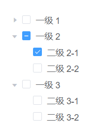
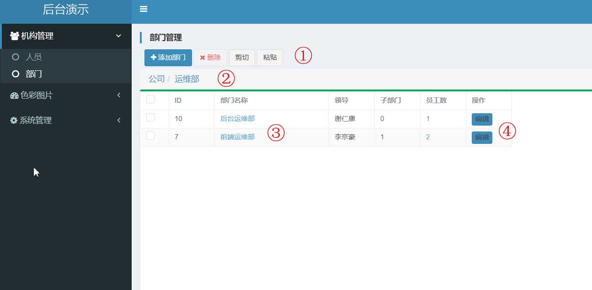

2. 部门管理¶
本模块主要展示树状结构数据的管理，以及单条数据，多维度信息展示。
在现实业务中有很多数据是树状结构，部门之间的组织结构就是树状结构。这种数据一般使用普通的树状ui控件进行操控。

但是这种控件不能显示丰富的信息，为了适应功能的扩展，改造成层级式+table的ui界面。

- 按钮区域可以进行数据操作。
添加部门指的是在当前层级下添加一个部门。剪切、粘贴如window文件夹操作一样，先勾选一个部门进行剪切，再切换到某部门下，进行粘贴。 - 层级导航路径面板。显示了当前的层级路径，可以快速的在层级间进行切换。
- 采用table来进行详细数据的呈现。在位置3处，可以点击进入下层目录。
- 由于最明显的位置被导航到下级占据，所以明确的在位置4放置
编辑按钮。
此外还显示了当前部门人数是可以点击的，可以查看人员情况。这种将各种功能按钮分散到每行的相关列上去，是的按钮意图更能被理解，是的信息根据紧凑。